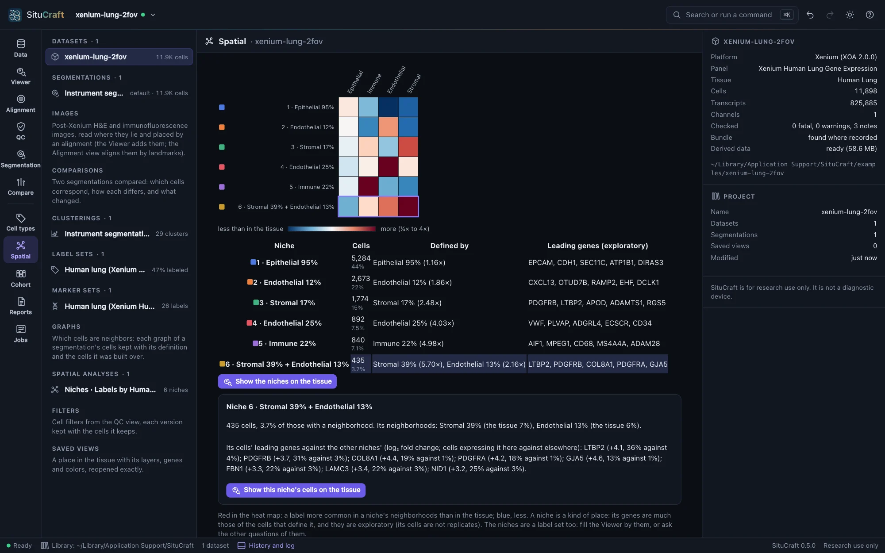
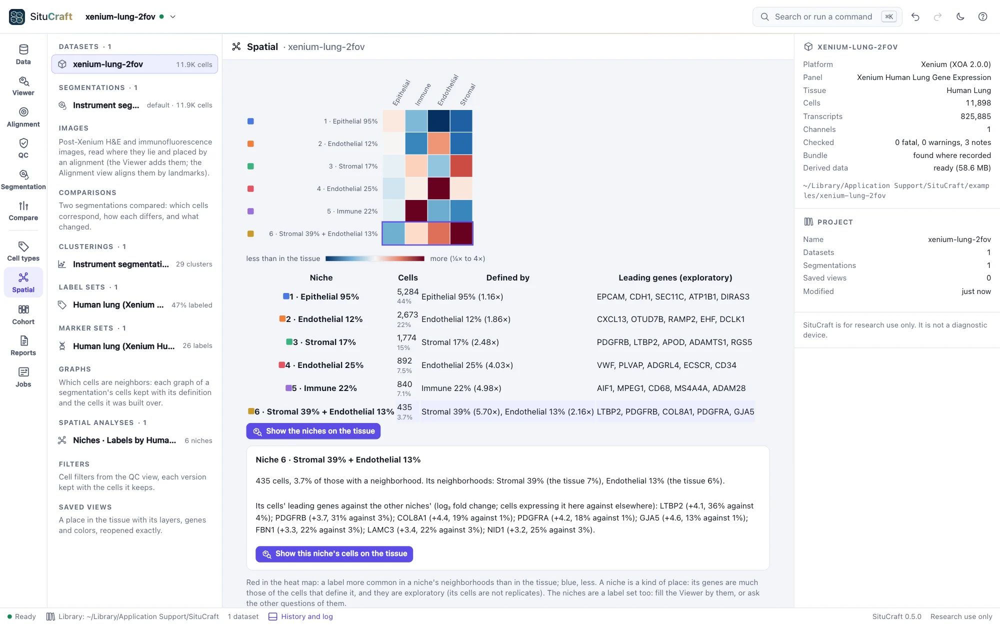
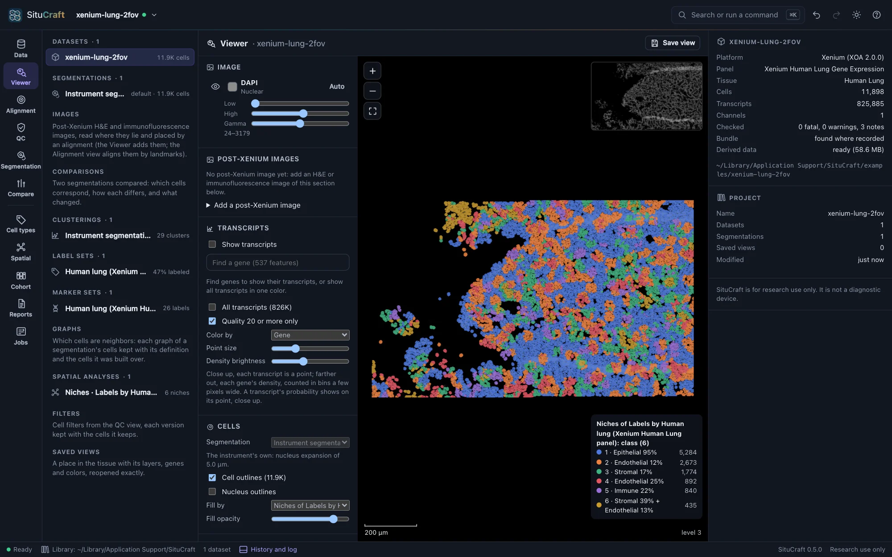
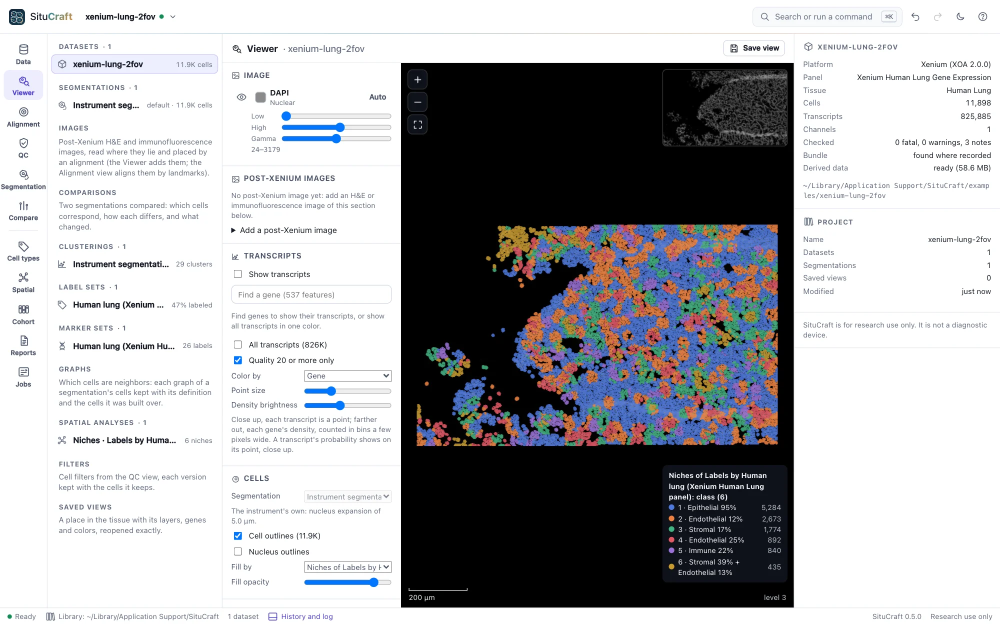
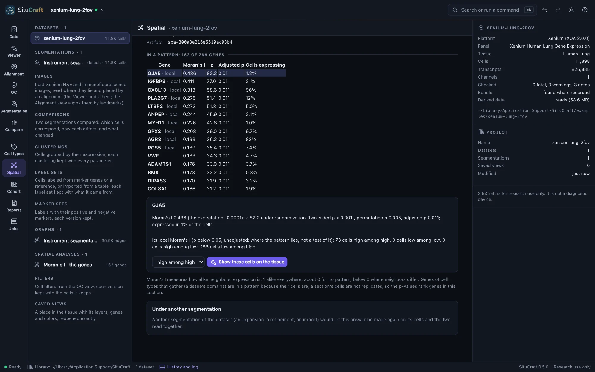
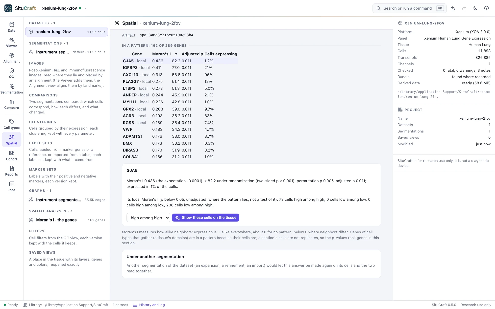
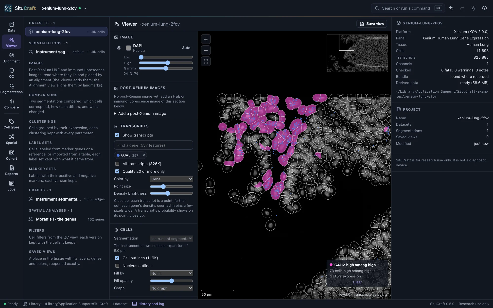
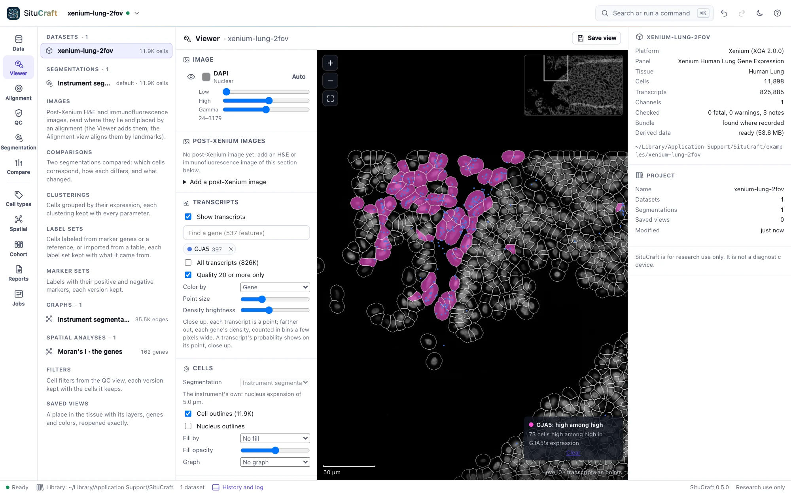
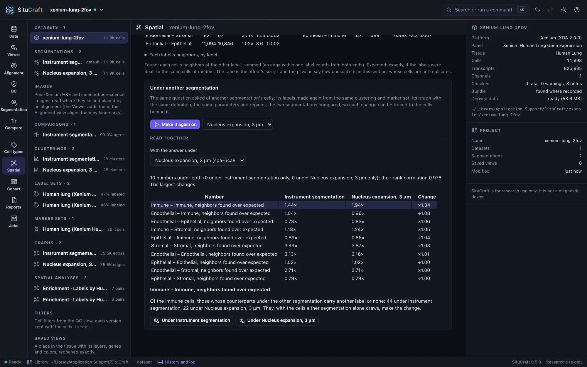
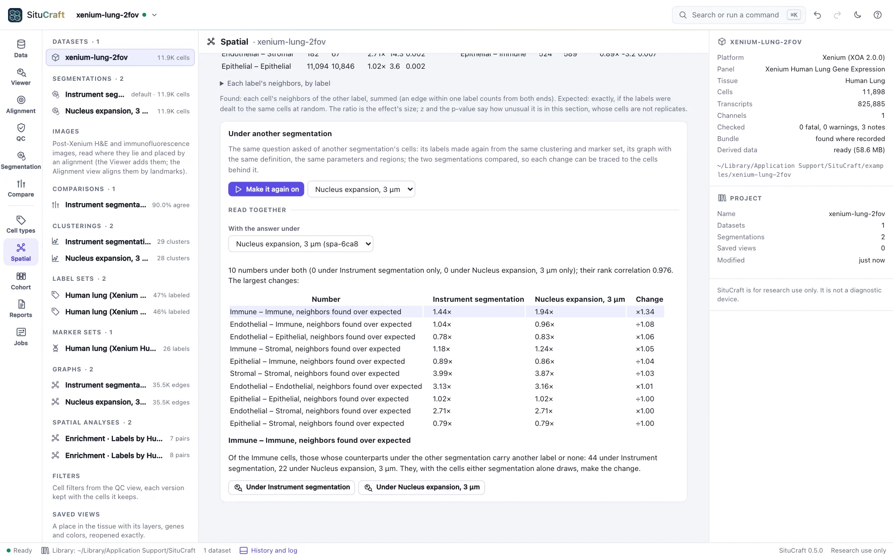

Niches and genes
Beyond which types are neighbors: the tissue's kinds of place, the genes expressed in a pattern and where, how much an answer depends on the segmentation, and what a million cells take.
Cellular neighborhoods
Niches are kinds of place in the tissue. Each cell's neighborhood (its 10 nearest labeled cells, itself among them when it is labeled, or the labeled cells within a radius) is described by its labels' shares, and the cells are grouped by these by k-means into niches. A niche is a kind of place, not a kind of cell: an unlabeled cell has the niche of the labeled cells around it. Niches are numbered by size and named by the labels they hold more of than the tissue does, with their shares: "4 · Endothelial 25%" is a place where a quarter of the cells are endothelial, against 6% in the tissue, though most are still epithelial.


The heat map shows each niche's make-up against the tissue's, red where a label is commoner in it. Each niche's leading genes are those of its cells against the other niches' cells; they are much the genes of the cells that define it, and exploratory. k-means finds a good answer from where it starts, not always the best: the niches are found again from other seeds and compared with the adjusted Rand index. Agreement near 1 says the niches are stable; low agreement says there are more niches than the tissue holds kinds of place (try fewer, or larger neighborhoods).
Show the niches on the tissue fills every cell by its niche. Niches are a label set too: the Viewer's fill lists them, and the other questions can be asked of them (which niches neighbor which, or fill a region).


Spatially variable genes
Spatially variable genes asks which genes are expressed in a pattern across the tissue. It is of genes, not labels: choose a graph and ask. Each gene's Moran's I measures how alike its expression is in neighboring cells: near 1 when neighbors are alike, about 0 for no pattern, below 0 where neighbors differ. Each gene is tested against its values dealt to the cells at random, analytically and by permutation, and the p-values are adjusted over the genes. Genes of cell types that gather are in a pattern because their cells are.


For the leading genes (10 by default), local Moran's I shows where a pattern lies: each cell high among high, low among low, or unlike its neighbors (by a permutation test of each cell, not adjusted: it shows the pattern, it does not test it). Choose a gene and a class, and Show these cells on the tissue.


Under another segmentation
An answer depends on the cells it was asked of. To see how much, make it again on another segmentation of the dataset (an expansion, a refinement, an import): under the answer, Under another segmentation, choose one and Make it again on. SituCraft compares the two segmentations (or uses their comparison), makes the labels again on the other's cells from the same clustering and marker set, builds a graph of the same definition, and asks the same question with the same parameters and regions. Labels curated by hand, agreed among sets, imported for one segmentation's cells, or niches cannot be made again this way; it says what to do instead.
Read together lists every number under both, the largest changes first, and the rank correlation of the two answers (near 1: the same order). Choose a change to find the cells behind it: of its labels' cells, those whose counterparts under the other segmentation carry another label or none. Show them under either segmentation.


A number that changes much between segmentations is a number of the segmentation as much as of the tissue. On the simulated tissue, the enrichment of its types and its niches hardly change between its true cells, the instrument's and a refinement; Moran's I of the marker genes nearly doubles under the instrument's expansion, whose cells take transcripts from their neighbors.
Large sections
Every question is asked of a whole section's cells. On four cores, a million cells' graphs, enrichment, co-occurrence and niches take seconds, and Moran's I of a panel's genes, with its permutations and the leading genes' local Moran's I, about a minute and a half in about 1 GB. Nearest distances and Ripley's K keep every pair of cells within their reach (100 µm by default), 3 to 4 GB at a million cells: on a computer with less memory, ask them of a region, or with a smaller reach.
A section's cells are not independent replicates: these numbers describe this section. Comparing conditions needs samples, compared as samples (a later release).